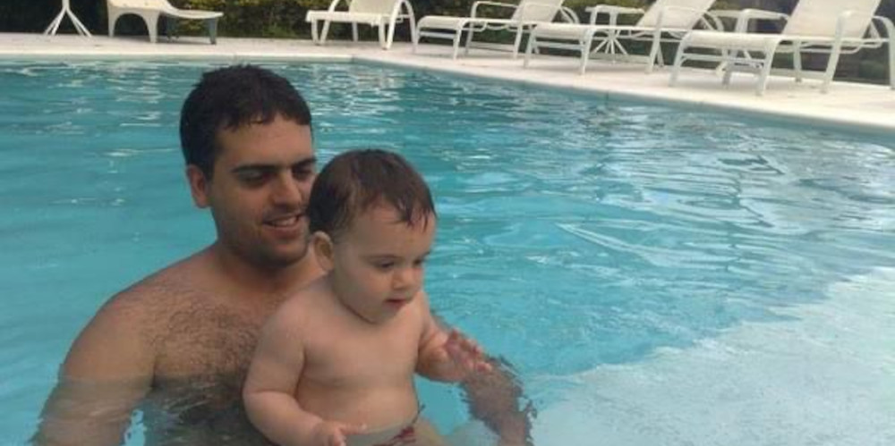
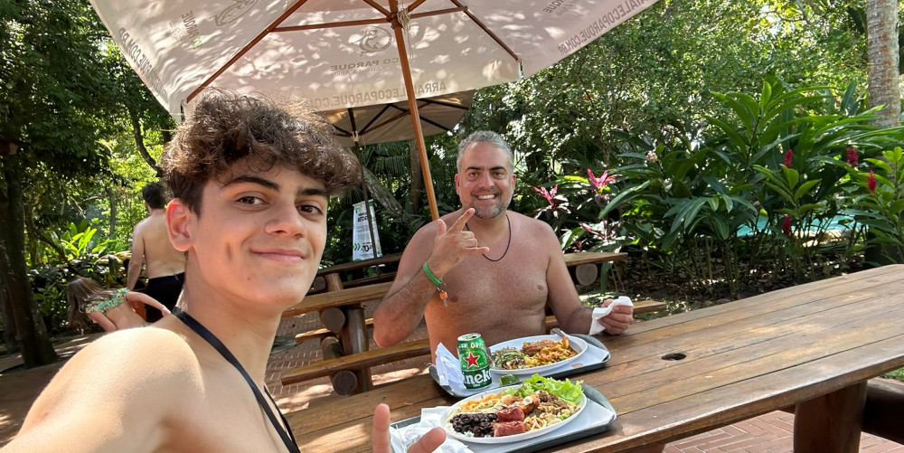
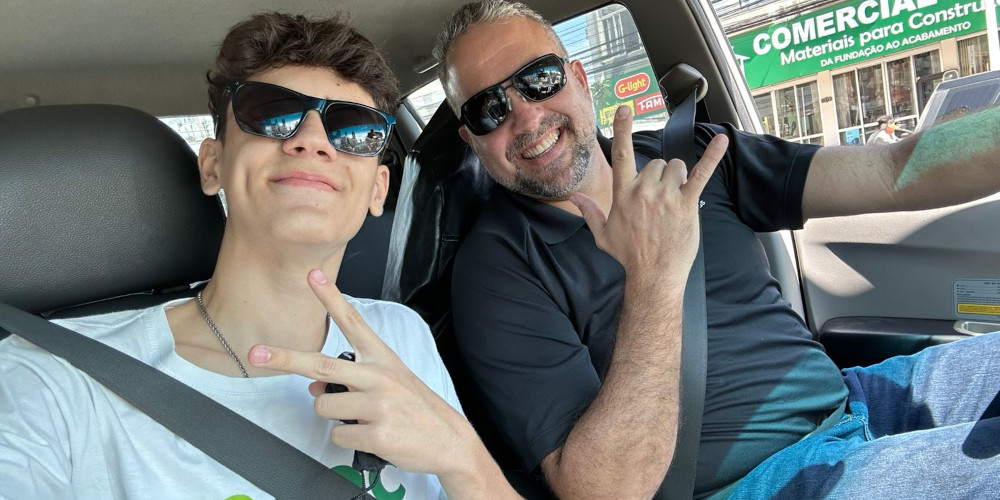

Início
Oi pai.. Eu estava pensando até uns dias no que fazer para o dia do seu aniversário, então veio na minha mente a ideia de construir umas páginas para vc e falar algumas coisas que vc merece muito ouvir/ler, então espero que você goste da minha ideia. Bom... Faz 17 anos desde que a nossa história começou e com isso veio muita coisa...
Falar sobre você é falar sobre alguém que, mesmo nos dias mais cansativos, nunca pensou duas vezes antes de colocar a família em primeiro lugar. É lembrar de um homem que abriu mão de muitos momentos ao meu lado durante a infância, não porque quis, mas porque precisava. E, mesmo que na época eu não compreendesse o peso dessas escolhas, hoje entendo que cada ausência sua tinha um propósito maior: garantir que nunca faltasse nada em casa e que eu tivesse uma vida digna, segura e cheia de oportunidades.
Com o tempo, aprendi a enxergar o pai que você sempre foi, mesmo quando não estava fisicamente comigo. Aprendi a reconhecer seu amor nas contas pagas, no alimento que nunca faltou, nas oportunidades que você lutou para me oferecer e, principalmente, na sua preocupação constante em proporcionar uma vida melhor para nós... Você sempre pensou no futuro da família, muitas vezes antes mesmo de pensar no seu próprio bem-estar.
Hoje, ao olhar para trás, percebo quantos desafios você enfrentou e quantas escolhas difíceis precisou fazer em nome do nosso conforto e da nossa segurança. E é por isso que este aniversário não é apenas mais um dia para desejar felicidades; é um dia para agradecer. Agradecer por todo o esforço, por toda a luta, por todo o amor que você colocou em cada decisão.Agradecer por ser esse exemplo de responsabilidade, coragem e determinação.
Feliz aniversário Pai. Que este dia seja tão especial quanto a sua história e que você sinta, não apenas hoje, mas sempre, o tamanho da gratidão e do amor que tenho por você. Obrigado por tudo o que você fez, por tudo o que faz e por tudo o que representa para mim e para a nossa família. Você é, e sempre será, um dos maiores orgulhos da minha vida...
